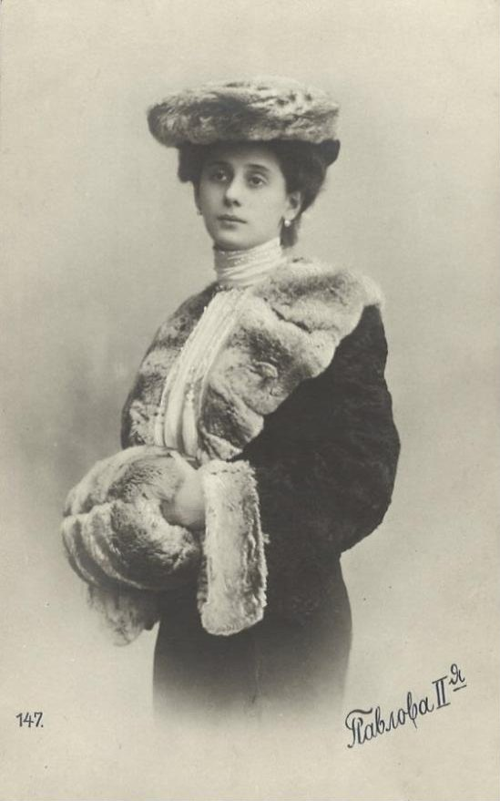

Анна Павлова
1881–1931
Солистка Мариинского театра, одна из самых знаменитых балерин в истории. Прославилась миниатюрой «Умирающий лебедь» (хореограф М. Фокин, 1907). Со своей труппой объездила весь мир, познакомив с балетом зрителей многих стран.